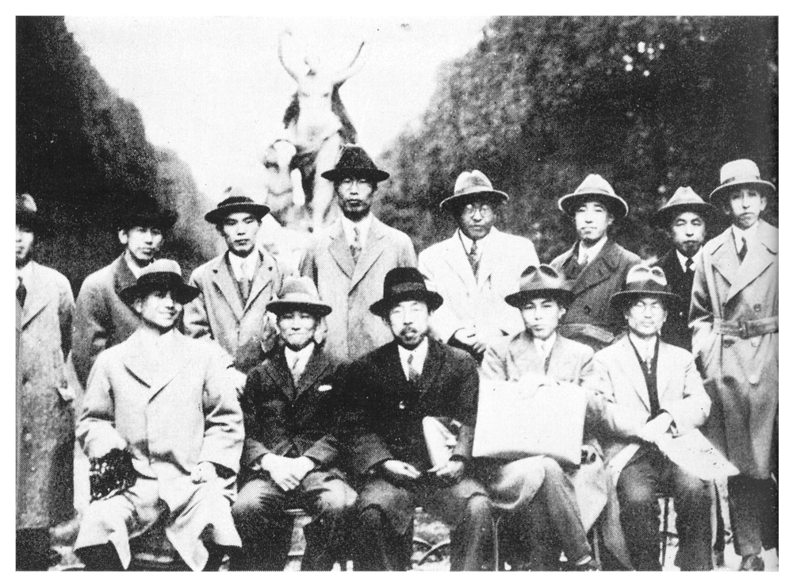

この寫眞は、昭和四年の夏のものである。巴里のたしかルクサンブールの公園だったかと思うが、そこで撮った北大理學部の教授候補者たちの寫眞である。

後列右端から説明すると、最初が現北大理學部長太泰教授、當時男爵であったが、いかにもノーブルな顏である。次が今立教大學へ移っておられる吉田洋一さん、名著『零の發見』の著者である。三人目が、地質の原田教授、次が地質の鈴木教授である。
眞ん中の背の高いのが、現學術會議會長の茅さん、これが一番變っていない。次が私で、當時十二貫を上下していたころ。その次が物理の中村儀三郎教授で故人、左端が植物の山田教授である。山田さんは現在はもう禿げ上がって立派な老教授の風貌になっている。
前列右端が數學の河口教授、當時二十六歳くらいで、すでにひげを貯えていた。寫眞ではよくわからないが。次がデスモスチルスで有名な化石學者長尾教授、故人。眞ん中が田所教授で現在北海道學藝大學學長。當時北大農學部の中堅教授だったが、この仲間にはいると、ひどく年長に見える。次が現北大學長の杉野目さんで、當時からこの中でも、一番いきがよかった。左端が化學の柴田教授で故人。
眞ん中の背の高いのが、現學術會議會長の茅さん、これが一番變っていない。次が私で、當時十二貫を上下していたころ。その次が物理の中村儀三郎教授で故人、左端が植物の山田教授である。山田さんは現在はもう禿げ上がって立派な老教授の風貌になっている。
前列右端が數學の河口教授、當時二十六歳くらいで、すでにひげを貯えていた。寫眞ではよくわからないが。次がデスモスチルスで有名な化石學者長尾教授、故人。眞ん中が田所教授で現在北海道學藝大學學長。當時北大農學部の中堅教授だったが、この仲間にはいると、ひどく年長に見える。次が現北大學長の杉野目さんで、當時からこの中でも、一番いきがよかった。左端が化學の柴田教授で故人。
昭和三年に、北大に理學部が創設されることになり、教授の候補者が、廣く全國から集められた。時の創立委員長、後の阪大總長眞島利行博士の意見で、なるべく若い人を、全國の各大學から一人ずつ採用することになった。たとえば物理では、既設の北大工學部から池田芳郎、東北帝大から茅誠司、東京帝大から私、京都帝大から中村儀三郎というふうに選ばれたわけである。平均年齡は三十何歳で、數學の功力、河口君などは、今の數え方だと二十六歳くらい。私も二十八歳だったかと思うが、ずいぶん思い切って若い連中を集めたものである。
そういう候補者たちは、一齊にヨーロッパとアメリカへ送り出された。そして二年間の留學を終えて、相前後して歸朝、昭和五年の理學部開學にほぼ間に合ったわけである。
一同が出そろったところで、昭和四年の春に、巴里で第一回の會合をすることになった。委員長代理の田所さんは札幌から出張してこられた。他の連中は、大部分ヨーロッパにいたので、ロンドンからも、ベルリンからも、それぞれ巴里に集まってきた。そして第一回の教授會は巴里で開かれたわけである。
二日ばかり會議をして、あと巴里を方々見て回ったが、その時のスナップの一枚が、この寫眞である。現北大學長の杉野目さんが、勇敢なフランス語で、近くにいた子供にシャッターを押させたので、一同めでたく、この一枚の寫眞に納った。
この頃の巴里には、日本人の留學生や、畫家の人たちがたくさんいた。日本の國力が一番充實して、四大國の一つとして威張っていた時代である。フランスは第一次大戰の痛手がひどく、フランは暴落をつづけていた。弟なども、この一寸前くらいに、巴里へやつて［＃「やつて」はママ］來ていたが、月に日本金の七十圓近くもあれば、立派に暮せた。東京の下宿にいるのと、そうちがわない經費で、時々メドックくらいは飮めた。
伯林からやって來た茅さんや中村さんたちと、凱旋門近くの高級アパートを、一週間借りて暮したが、金ボタンのぎっしり竝んだ制服を着たボーイが、うやうやしく珈琲をもって來た。それでも、文部省の旅費がまだ十分餘ったのであるから、まさに今昔の感がある。英國や獨逸から出て來ると、巴里の料理が安くて美味いので、誰も皆びっくりした。とくにオードウヴルが氣に入った。少し上等の店だと、小さい車に何十種という品數を揃えて押して來る。オードウヴルだけで腹一杯にすると、値段が倍くらいに上るがそれでも安いものであった。
この寫眞を見ていると、はなやかだった當時の日本の國の姿が、ありありと浮んでくる。